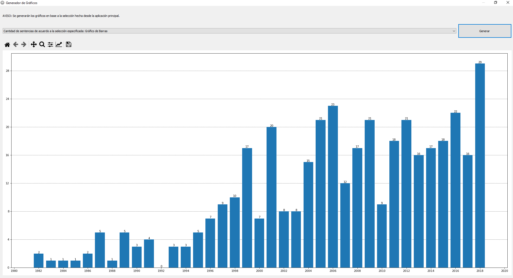
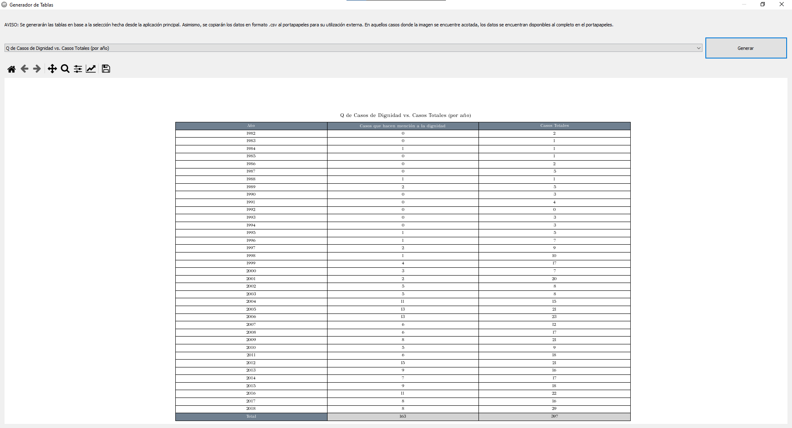
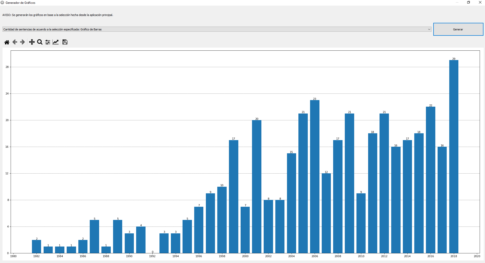
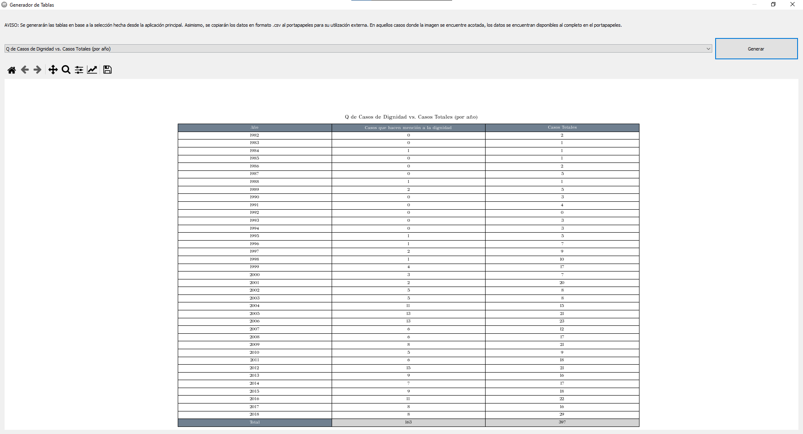

Base de datos y utilidad de visualización del proyecto PICTO-UCA 2017-0032
Esta base de datos fue construida en colaboración con el equipo de investigadores del proyecto, y consistió en una colección de todas las decisiones judiciales que tomó la Corte Interamericana de Derechos Humanos. Una de mis principales tareas fue la organización y limpieza de la información, así como el desarrollo a partir de ese punto. De allí, convertí esa información en una base de datos SQLite y desarrollé una herramienta de visualización a medida de la misma. Esta herramienta fue una parte integral del proyecto, ya que ayudó a visualizar de mejor manera la información y a generar diversos reportes y gráficos.
Tanto la base de datos como la herramienta se encuentran disponibles en este link.
 


